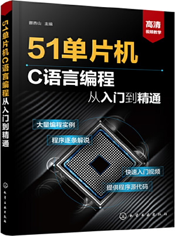

首页 > 书籍下载
《51单片机C语言编程从入门到精通》PDF下载（高清完整版）
|  | 作者：蔡杏山 |
| 出版时间：2020年02月01日 | |
| 出版社：化学工业出版社 | |
| 书号ISBN：9787122350800 | |
| 总页数：301 | |
| 总字数：48W |
这是一本知识点全面、语言通俗易懂、实例丰富的单片机书籍，适合有一定 C 语言基础，想快速入门 51 单片机开发的读者。
这里提供的是《51单片机C语言编程从入门到精通》的高清 PDF 下载，内容完整，附带目录标签。
这本书最大的特点，就是提供有丰富的开发实例，比如点亮单个 LED 灯、实现双色 LED 点阵、实现中断、控制步机电机等，致力于读者在大量实践中快速入门 51 单片机开发。
一位跟随这本书学习 51 单片机的读者，学完之后这样评价：
这本书可以说是图文并茂，讲解的很详细，而且内容比较实战化，应用程度高。
还有一位初学者也给出了好评：内容丰富，实例都是比较常用的，也是比较典型的单片机应用实例。图文并茂，讲解到位，应用典型，作为初学者，是非常推荐的。
书籍目录
- 第1章 单片机快速入门 1
- 1.1 单片机简介 1
- 1.2 单片机应用系统开发实例 4
- 第2章 数制与C51语言基础 18
- 2.1 数制与数制的转换 18
- 2.2 C51语言基础 23
- 第3章 51单片机编程软件的使用 33
- 3.1 Keil C51软件的安装 33
- 3.2 程序的编写与编译 35
- 3.3 程序的仿真与调试 45
- 第4章 单片机驱动发光二极管的电路及编程 52
- 4.1 LED（发光二极管） 52
- 4.2 单片机点亮单个LED的电路及程序详解 53
- 4.3 单片机点亮多个LED的电路及程序详解 59
- 4.4 采用PWM（脉宽调制）方式调节LED亮度的原理及程序详解 67
- 第5章 单片机驱动LED数码管的电路及编程 70
- 5.1 单片机驱动一位LED数码管的电路及程序详解 70
- 5.2 单片机驱动8位LED数码管的电路及程序详解 75
- 第6章 中断功能的使用及编程 82
- 6.1 中断的基本概念与处理过程 82
- 6.2 8051单片机的中断系统结构与控制寄存器 83
- 6.3 中断编程举例 87
- 第7章 定时器/计数器的使用及编程 91
- 7.1 定时器/计数器的定时与计数功能 91
- 7.2 定时器/计数器的结构原理 92
- 7.3 定时器/计数器的控制寄存器与四种工作方式 94
- 7.4 定时器/计数器的应用及编程 99
- 第8章 按键电路及编程 103
- 8.1 独立按键输入电路与程序详解 103
- 8.2 矩阵键盘输入电路与程序详解 116
- 第9章 双色LED点阵的使用及编程 129
- 9.1 双色LED点阵的结构原理与检测 129
- 9.2 单片机驱动双色点阵的电路及编程 135
- 第10章 液晶显示屏的使用及编程 145
- 10.1 1602字符型液晶显示屏的硬、软件 145
- 10.2 单片机驱动1602液晶显示屏的电路及编程 151
- 第11章 步进电机的使用及编程 160
- 11.1 步进电机与驱动芯片 160
- 11.2 单片机驱动步进电机的电路及编程 166
- 第12章 单片机的串行通信及编程 175
- 12.1 并行通信和串行通信 175
- 12.2 串行通信口的结构与原理 178
- 12.3 串行通信口的控制寄存器 179
- 12.4 四种工作方式与波特率的设置 180
- 12.5 串行通信的应用编程 184
- 第13章 模拟I2C总线通信及编程 190
- 13.1 I2C总线 190
- 13.2 I2C总线存储器24C02（E2PROM） 192
- 13.3 单片机与24C02的I2C总线通信电路及编程 196
- 第14章 A/D（模/数）与D/A（数/模）转换电路及编程 206
- 14.1 A/D（模/数）与D/A（数/模）转换原理 206
- 14.2 A/D与D/A转换芯片PCF8591 208
- 14.3 由PCF8591芯片构成的A/D和D/A转换电路及编程 210
- 第15章 51单片机的硬件系统 219
- 15.1 8051单片机的引脚功能与内部结构 219
- 15.2 8051单片机I/O端口的结构与工作原理 225
- 15.3 8051单片机的存储器 229
- 15.4 STC89C5X系列单片机 238
- 第16章 单片机开发常用电子元器件 250
- 16.1 基本电子元器件 250
- 16.2 半导体元器件 259
- 16.3 其他类型元器件 270
- 16.4 贴片元器件 280
- 16.5 集成电路 286
书籍下载
一键登录，免费下载完整版 PDF，文件名称：《51单片机C语言编程从入门到精通》.pdf